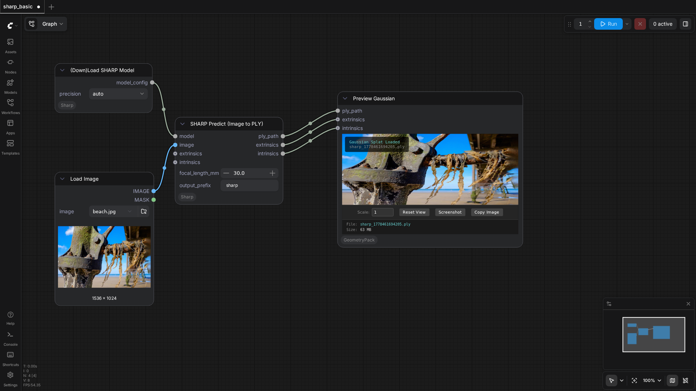
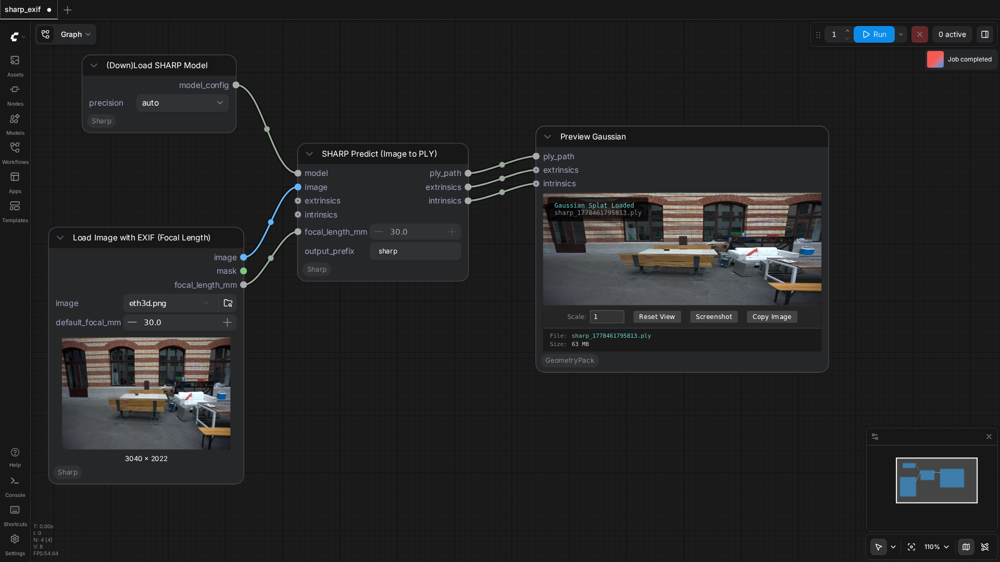

PozzettiAndrea/ComfyUI-Sharp
Test Results
2026-05-11 01:11 UTC
Linux-6.8.0-107-generic-x86_64-with-glibc2.35
AMD Ryzen 5 3600 6-Core Processor
NVIDIA GeForce RTX 5060
100.0%
2 passed
2/2 tests
Workflows
Grid
List

sharp_basic
pass
128.62s

sharp_exif
pass
106.83s
Downloaded Models
4 files · 2.6 GB
models/sharp/
2.6 GB
sharp_2572gikvuh.pt
2.6 GB
.cache/huggingface/CACHEDIR.TAG
191.0 B
.cache/huggingface/download/sharp_2572gikvuh.pt.metadata
124.0 B
.cache/huggingface/.gitignore
1.0 B
×
‹
›
0.0s / 0.0s
Resource Usage
RAM (GB)
VRAM (GB)